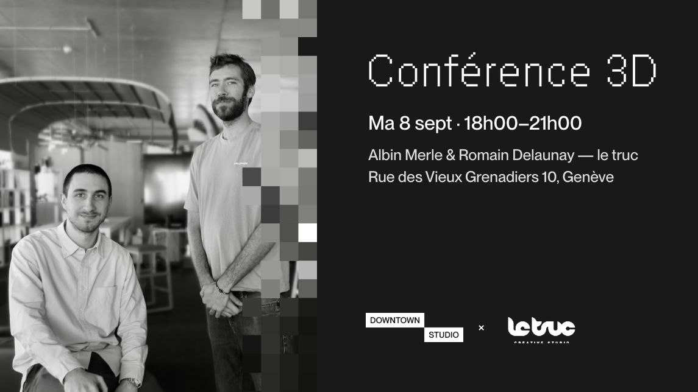

Rencontrer / Conférences et masterclasses
La créativité en duo, avec Blender
Mardi 8 septembre 2026Conférences et masterclasses

Le studio le truc travaille en duo : deux personnes sur les mêmes projets, qui échangent sans cesse leurs rôles. Albin Merle et Romain Delaunay expliquent comment cette méthode garde un regard neuf et fait émerger plus d'idées en moins de temps.
Ils montrent comment Blender, avec le prototypage rapide, les workflows non destructifs et les Geometry Nodes, permet d'aboutir à des concepts et des animatiques en quelques jours.
Avec
- Albin Merle, le truc studio
- Romain Delaunay, responsable du motion design, le truc studio
Dans la même série